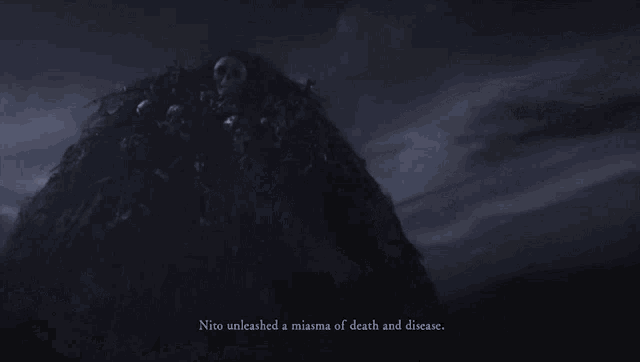

Desenvolvido pela FromSoftware, Dark Souls é o sucessor espiritual do exclusivo Playstation Demon's Souls , uma experiência de RPG de ação que surpreendeu não apenas por receber aclamação da crítica, mas por obter publicação em 3 regiões e acumular vendas estimadas de mais de 1 milhão de unidades O apelo do jogo original estava em sua renomada dificuldade e abordagem de tentativa e erro, que Dark Souls procurou sustentar, atraindo assim a base de fãs de Demon's Souls. O desenvolvedor e o editor afirmaram que não havia intenções de DLC, no entanto, após o lançamento do Prepare to Die Edition para PC com conteúdo adicionado, um DLC de expansão foi lançado para PS3 e Xbox360, intitulado Artorias of the Abyss .
O jogo foi lançado no Japão em 22 de setembro de 2011, em 4 de outubro na América do Norte e em 7 de outubro na Europa. O título oficial final é "Dark Souls" Antes de ser decidido esse nome, os desenvolvedores pretendiam chamá-lo de "Dark Ring", em referência à aura que emana do anel amaldiçoado do personagem principal. O nome foi descartado quando os desenvolvedores souberam que era uma gíria rude na Grã-Bretanha. Desenvolvido pela From Software e publicado pela Namco Bandai Games No Japão, o título é exclusivo do Playstation 3 e é publicado pela From Software. Internacionalmente, a Namco Bandai Games é a editora e o título está disponível para Playstation 3 e Xbox 360. A From Software declarou que é a única responsável pelo conteúdo do jogo.

Dark Souls [c] é um RPG de ação de 2011 desenvolvido pela FromSoftware e publicado pela Namco Bandai Games . Um sucessor espiritual de Demon's Souls da FromSoftware , o jogo é o primeiro da série Dark Souls . O jogo se passa no reino de Lordran, onde os jogadores assumem o papel de umpersonagem morto-vivo amaldiçoado que inicia uma peregrinação para descobrir o destino de sua espécie. Uma porta para Windows com conteúdo adicional, conhecida como Prepare to Die Edition , foi lançada em agosto de 2012. Também foi lançada para consoles com o subtítuloArtorias do Abismo em outubro de 2012.
Dark Souls foi citado como um dos maiores videogames já feitos . Os críticos elogiaram a profundidade de seu combate, design de nível intrincado e uso de texto de sabor . No entanto, a dificuldade do jogo recebeu críticas mistas, com alguns criticando-o por ser muito implacável. A versão original do jogo para Windows foi menos bem recebida, com críticas direcionadas a vários problemas técnicos. Em abril de 2013, o jogo vendeu mais de dois milhões de cópias em todo o mundo. Seu sucesso levou ao desenvolvimento de duas sequências - Dark Souls II (2014) e Dark Souls III (2016) - enquanto uma versão remasterizada foi lançada em 2018.

Dark Souls II [a] é um RPG de ação de 2014 desenvolvido pela FromSoftware e publicado pela Bandai Namco Games . Uma entrada na série Dark Souls , foi lançado para Windows , PlayStation 3 e Xbox 360 . Tendo lugar no reino de Drangleic, o jogo apresenta jogabilidade jogador contra ambiente (PvE) e jogador contra jogador (PvP). Dark Souls II foi lançado em março de 2014 após alguns atrasos iniciais, com a versão para Windows sendo lançada no mês seguinte.
Dark Souls II foi um sucesso comercial e de crítica. Uma versão remasterizada do jogo, intitulada Dark Souls II: Scholar of the First Sin , foi lançada para PlayStation 3 , PlayStation 4 , Xbox 360 , Xbox One e Windows em abril de 2015. Ela contém o jogo original e seu conteúdo para download com atualizações atualizadas . gráficos, capacidade multijogador online expandida e várias outras mudanças. Uma sequência, Dark Souls III , foi lançada em 2016.

Dark Souls III [a] é um RPG de ação de 2016 desenvolvido pela FromSoftware e publicado pela Bandai Namco Entertainment para PlayStation 4 , Xbox One e Windows . A terceira e última entrada da série Dark Souls , é jogada em uma perspectiva de terceira pessoa , e os jogadores têm acesso a várias armas, armaduras, magia e consumíveis que podem usar para lutar contra seus inimigos. Hidetaka Miyazaki , o criador da série, voltou a dirigir o jogo depois de entregar as tarefas de desenvolvimento de Dark Souls II a outros.
Dark Souls III foi um sucesso crítico e comercial, com os críticos chamando-o de uma conclusão digna e adequada para a série. Ele vendeu mais de três milhões de cópias nos primeiros dois meses e mais de 10 milhões até 2020. Duas expansões de conteúdo para download (DLC), Ashes of Ariandel e The Ringed City , também foram feitas. Dark Souls III: The Fire Fades Edition , contendo o jogo base e ambas as expansões, foi lançado em abril de 2017.

Gwen Lorde das Cinzas é um chefe em Dark Souls e Dark Souls Remastered . Ele é o chefe final do jogo, e o jogo terminará automaticamente após você derrotá-lo.
Gwen,era um poderoso guerreiro e o maior dos senhores. Ele era conhecido como o Senhor da Luz do Sol e liderou os esforços para acabar com a Era dos Antigos, junto com Nito,o Primeiro dos Mortos , a Bruxa de Izalith , e o dragão-traidor, Seath o Descamado . Comandando seus cavaleiros, ele liderou os Lordes à vitória e supervisionou a Era do Fogo. Apesar de ter sido parcialmente legado aos Quatro Reis e Seath, sua alma permanece "uma coisa poderosa de fato".
Nito o senhor Dos Túmulos , chamado também como o primeiro dos mortos , foi um dos quatros Lordes originais emergido durante o alvorecer da era do Fogo e um chefe obrigatório em Dark Souls. Suas ações tornaram-se notórias, pela sua aliança com outros dois lordes e participação fundamental na guerra contra os Dragões.Nito, posteriormente se dedicaria a Morte total ganhando muitos adeptos em uma aliança conhecida como Servos do Senhor dos Túmulos, que espalhariam a morte em seu nome.
Nito é um ser Humanoide de proporções gigantesca com corpo formado por um aglomerado de esqueletos de diferentes tamanhos . Seu tórax possui uma grande abertura com as costelas inclinada para fora do corpo semelhantes a espinhos. Nito utiliza outros esqueletos completos como adorno presos ao seu pescoço. Como vestimenta, Nito utiliza apenas uma capa feita de material desconhecido , que auxilia-o no combate .Ela emite um brilho roxeado ,que sinaliza seu ataque, uma explosão que libera Miasma de nuvem e doenças. Por último , como arma Nito utiliza a espada do senhor dos túmulos.
Nito, foi um dos Senhores originais que encontrou uma Alma de um Lord l no nascer da Era do Fogo. Ele se juntaria posteriormente a Gwyn Lorde da luz do sol e a Bruxa de Izalith em aliança militar para derrotar os Dragões.Enquanto Gwyn descamava os Dragões com seus poderosos raios da luz do sol e bruxa os incediavam com suas tempestades de fogo, Nito liberava um miasma de Morte e doenças até que por fim, os dragões foram derrotados, dando inicio a era do fogo
Durante a era do fogo, Nito retornaria para Tumba dos Gigantes de onde controlaria a morte de toda a vida, oferecendo muita energia da sua própria alma para a morte.
Com o declínio da primeira chama veio a ruina da Bruxa de Izalith e o sacrifício de Gwyn para ligar o fogo. Entretanto Nito permaneceu inalterado , ainda em seu sono controlando a morte de toda vida. É provável que durante esse tempo, um grupo de seguidores do ocultismo. com um plano Malfadado , tenham tentado roubar os poderes do senhor do Túmulo, em um esforço para destruir os deuses.[3]. Ulteriormente o tempo em Lordran torna-se estagnado, com heróis do passado adentrando e saindo no tempo presente. É neste estágio que Nito ganha diversos seguidores, formando a Aliança dos servos do Senhor do Túmulo que invadem outros "mundos" através da estagnação , espalhando a morte e retornando com a oferenda, o Olho Negro da Morte, e são grandemente recompensados. Nito possui o Rito de Acender que posteriormente é roubado por um de seus seguidores, uma criatura conhecida como Pinwheel.
Durante os eventos de Dark souls , Membros da religião conhecida como o Caminho Branco decidem fazer uma expedição até os domínios de Nito para recuperar o Rito de Acender.A expedição é um fracasso não promovendo qualquer ameaça ao lorde. No decurso desses eventos o protagonista da história , referenciado como o Morto-vivo escolhido , recupera o Receptáculo dos Lordes em Anor Londo e precisa sacia-lo com a Alma dos Lordes primordiais. Logo , o escolhido viaja ate a tumba dos Gigantes e confronta o senhor do Túmulos,pondo um fim ao senhor da Morte.
A Bruxa de Izalith, é uma das figuras centrais de Dark Souls. Uma dos quatro Lordes originais e uma piromante genial que revolucionou a piromancia existente, a Bruxa de Izalith encontrou a Alma dos Lordes em meio da Primeira Chama, e com seu imenso poder, criou poderosas piromancias que foram utilizadas na Guerra dos Lordes para abater os Dragões Primordiais. Por muito tempo, as atividades da Bruxa e de suas filhas eram desconhecidas, com ela governando a cidade de Izalith, até que a Primeira Chama começou a desaparecer. Desesperada, a Bruxa tentou usar o seu poder para criar uma nova Chama, mas ela fracassou, e a tentativa a transformou numa imensa monstruosidade que devorou toda Izalith e começou a criar os mais horrendos demônios, condenando a cidade outrora gloriosa. Agora ela reside em eterno sofrimento nas profundezas de Izalith, para sempre parindo demônios e aberrações.
Dark Souls se passa primariamente no reino fictício de Lordran, onde os jogadores assumem o papel de um personagem denominado Chosen Undead que, segundo lendas, seria responsável pela quebra de uma maldição que torna incapazes de morrer aqueles que são afligidos por uma misteriosa marca negra.
O undead acordara no assentamento dos mortos vivo e irá trilhar seu caminho baseado em sua vil escolha, porém,uma vontade o guia,que nem mesmo os sábios poderiam explicar
A eras atrás, não havia nada,tudo era coberto pela penumbra do abismo,poucos conseguiam habitar naquele mundo,apenas os dragões ancestrais e algumas criaturas do vazio, até que então,desse vazio,silencioso e ensurdecedor, surgiu uma chama
A lendária primeira chama,que traria consigo o inicio da vida,e o fim das trevas
A chama trouxe consigo,3 entidades primordiais para este mundo,Nito,o Senhor dos Mortos,A Bruxa de Izalith,e Gwyn,o Lorde das Cinzas,que tomaria a liderança nos acontecimentos que viriam as seguir
Vendo o que aquele reino tinha a lhes oferecer,Gwyn quis tomar a liderança daquelas terras, porém,os dragões ancestrais,que pertenciam aquele local muito antes dos 3 Antigos,se negaram a serem escravizados por Gwyn, iniciando assim,a guerra entre eles
Guiado por seus cavaleiros,Gwyn lançou seus devastadores raios contra as escamas de pedra dos dragões
Nito,e sua legião de mortos, espalharam um miasma corrosivo e tóxico aos dragões, provocando a morte de milhares
Já a Bruxa de Izalith,ajudada por suas filhas,dominou a arte da piromancia,e fez frente aos dragões nesse lendário confronto
Porém,diante todo esse confronto,um traidor vindo do lado dos dragões,mudaria o rumo dessa guerra por completo,Seath,O Descamado,traiu sua própria raça,e se juntou a Gwyn,visto que sem a mesma proteção que as escamas forneciam aos dragões,ele não teria a mínima chance defronte aos Antigos
A guerra estava acabada,os dragões haviam sido derrotados e a era do fogo ali se iniciava,com Gwyn assumindo o posto de Lorde da Primeira Chama